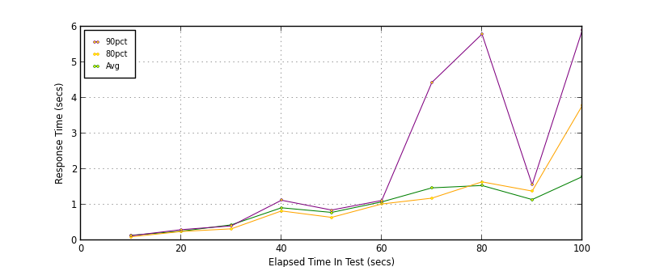
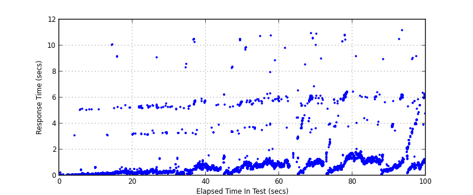
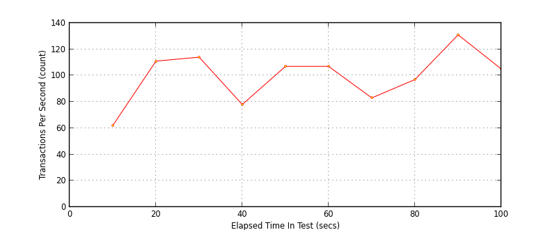

Performance Results Report
Summary
transactions: 10203
errors: 7
run time: 100 secs
rampup: 100 secs
test start: 2013-05-02 10:35:49
test finish: 2013-05-02 10:37:29
time-series interval: 10 secs
workload configuration:
| group name | threads | script name |
|---|
| user_group-1 | 100 | GetWeatherInformation.py |
| user_group-2 | 100 | GetCityForecastByZIP.py |
All Transactions
Transaction Response Summary (secs)
| count | min | avg | 80pct | 90pct | 95pct | max | stdev |
|---|
| 10203 | 0.028 | 0.971 | 1.095 | 1.574 | 5.278 | 11.202 | 1.430 |
Interval Details (secs)
| interval | count | rate | min | avg | 80pct | 90pct | 95pct | max | stdev |
|---|
| 1 | 623 | 62.30 | 0.028 | 0.140 | 0.097 | 0.128 | 0.174 | 5.145 | 0.512 |
| 2 | 1119 | 111.90 | 0.061 | 0.256 | 0.248 | 0.299 | 0.336 | 10.075 | 0.714 |
| 3 | 1144 | 114.40 | 0.104 | 0.434 | 0.322 | 0.405 | 0.500 | 9.096 | 0.904 |
| 4 | 789 | 78.90 | 0.075 | 0.913 | 0.825 | 1.126 | 5.669 | 10.492 | 1.661 |
| 5 | 1076 | 107.60 | 0.095 | 0.784 | 0.644 | 0.850 | 3.385 | 10.517 | 1.324 |
| 6 | 1074 | 107.40 | 0.475 | 1.079 | 1.020 | 1.119 | 1.958 | 10.769 | 1.173 |
| 7 | 839 | 83.90 | 0.082 | 1.473 | 1.184 | 4.434 | 6.042 | 10.948 | 1.773 |
| 8 | 976 | 97.60 | 0.101 | 1.539 | 1.642 | 5.793 | 6.150 | 10.914 | 1.842 |
| 9 | 1312 | 131.20 | 0.061 | 1.145 | 1.383 | 1.560 | 1.650 | 9.180 | 0.746 |
| 10 | 1051 | 105.10 | 0.167 | 1.788 | 3.787 | 5.904 | 6.052 | 11.202 | 1.931 |
Graphs
Response Time: 10 sec time-series

Response Time: raw data (all points)

Throughput: 5 sec time-series
